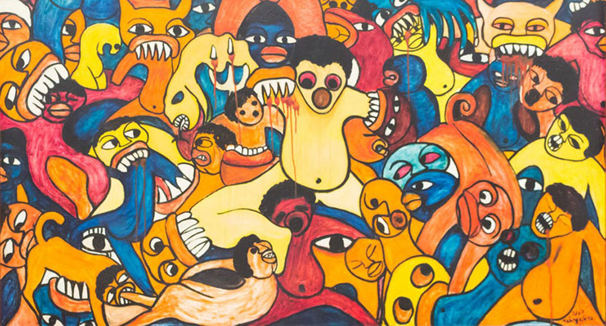

current exhibition
choice as metaphor
NOVEMBER 19, 2015 - JANUARY 11, 2016 RECEPTION: WEDNESDAY, NOVEMBER 19, 6 – 8
Choice as metaphor brings together more than 20 artists who cut, crumple or crease their material.
The gallery has long been interested in the intersection of works on paper and photography. Choice as metaphor highlights the artists' physical interventions, both delicate and violent.
Material included in the exhibition, but not limited to: 19th Century steel engravings, pulp fiction, Rives paper, anonymous photographs, pornography, beauty magazines, consumer packaging, steel, gelatin silver paper, color-aid, subway posters & legal tender.
Artists included in the exhibition, but not limited to: Stephen Aldrich, Thomas Allen, Jaq Belcher, Julie Cockburn, Danielle Durchslag, Tom Gallant, Debra Hampton, Lisa Hoke, Cal Lane, Lance Letscher, Chris McCaw, Vanessa Marsh, Andrea Mastrovito, Mia Pearlman, Abigail Reynolds, Casey Ruble, Simon Schubert, Lauren Seiden, Gerald Slota, Maritta Tapanainen, Wyatt Gallery + Hank Willis Thomas, Kako Ueda & Mark Wagner.
Choice as metaphor will remain on view through January 11. Kale gallery is open Wednesday – Sunday, 12 – 6pm. To request images, please contact the gallery at 925-555-1212 or info@kale.com.
past exhibitions
Stuart Richards - Milk & Honey JANUARY 15 - MARCH 2, 2016
Kale Gallery is pleased to present a solo exhibition of photographer Stuart Richards. Milk & Honey examines the complex architecture of bird nests, constructed from elements of the natural world and debris discarded by humans. The nests are intricate structures, unique in shape and form. More >>
Laury Barnes - The Peace APRIL 30 - JUNE 8, 2016
Jimmy Kale Gallery is delighted to present The Peace, photographer Laury Barnes' five-year study of Central Park. This is the first time a selection of these photographs will be seen by the public. It is also her New York City debut. More >>

Jason Fence - Harbor JULY 17 - AUGUST 9, 2016
Jimmy Kale Gallery is delighted to debut a series of new drawings by artist Jason Fence. His additive drawing process allows an on-going pattern to form. Each new color introduces another simple layer creating the complex overall arrangement. He is often inspired by domestic design sources and carpet patterns. More >>
Lisa Holt – Real People JULY 17 - AUGUST 9, 2016
Kale Gallery is delighted to present a series of photographs by tintype artist Lisa Holt. As urbanization continues to become more prevalent in America, history and growth of rural identity and culture become fleeting and near forgotten. Since 2010, Holt has been creating tintypes of traditional folk musicians who live in and around the Appalachian. More >>